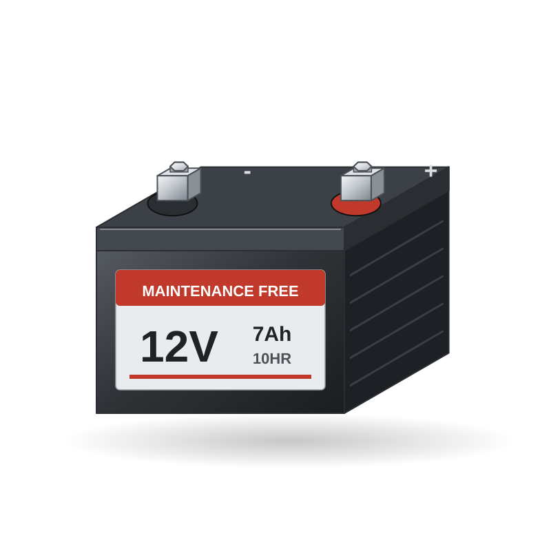
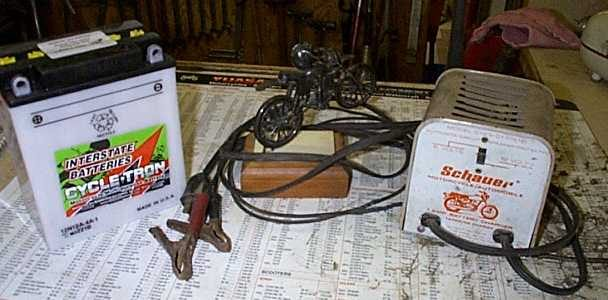
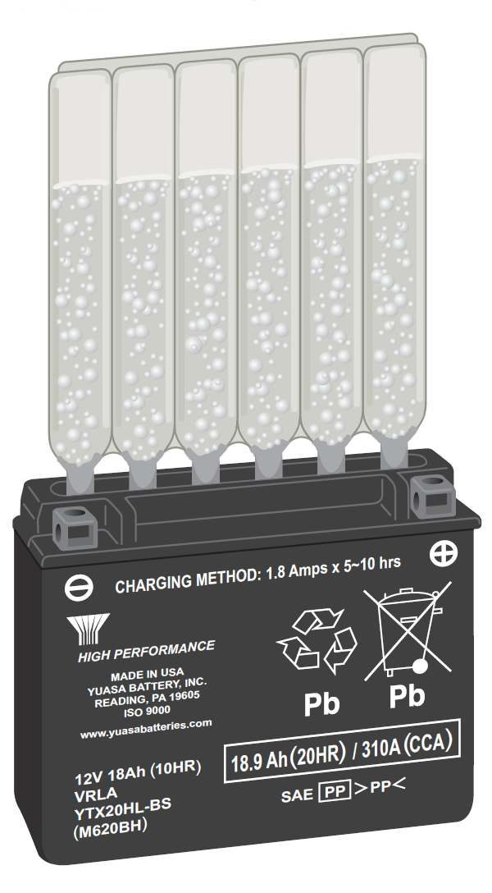
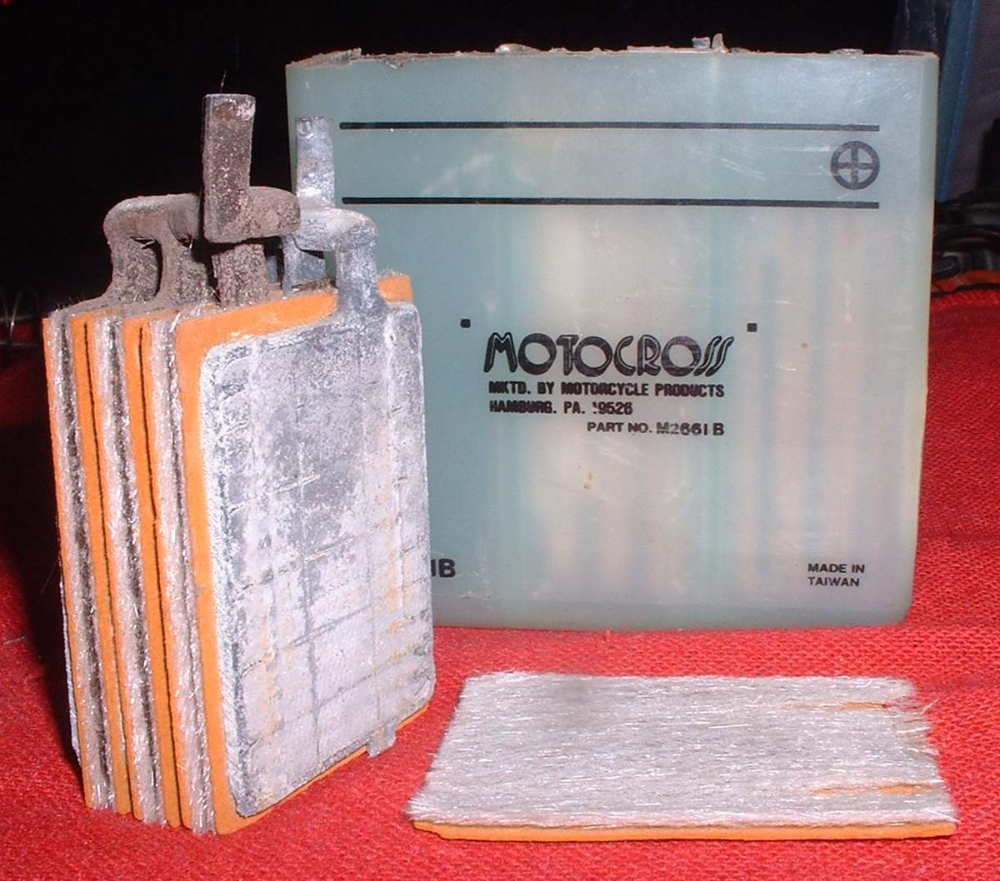
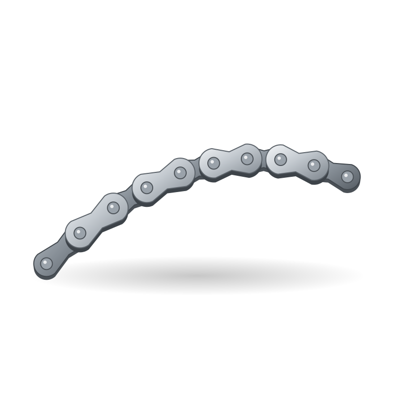
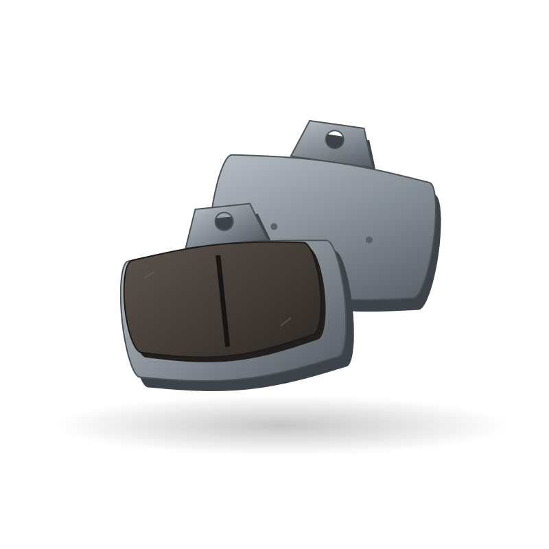
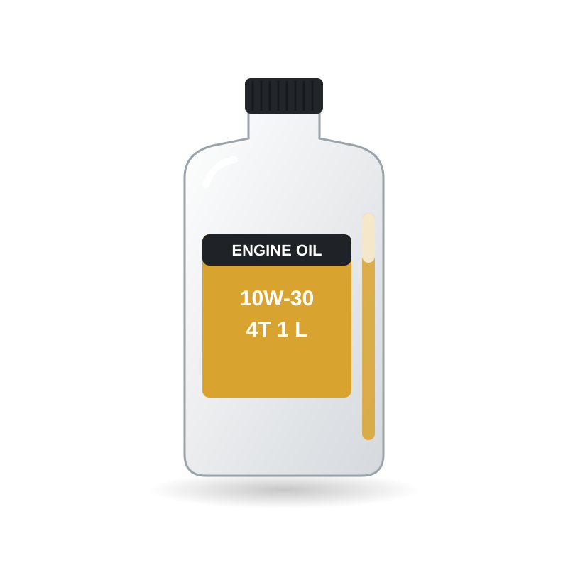
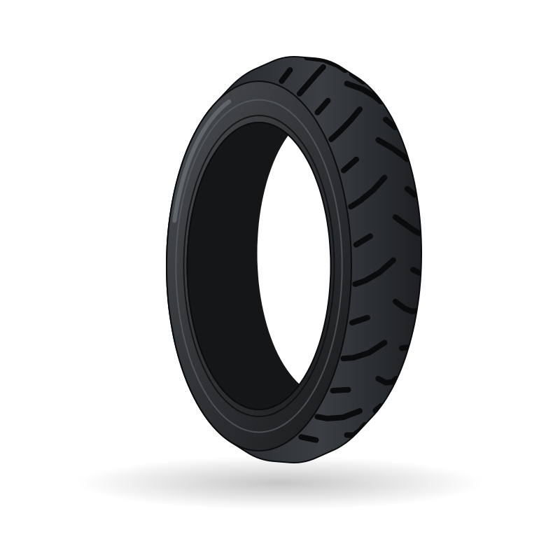
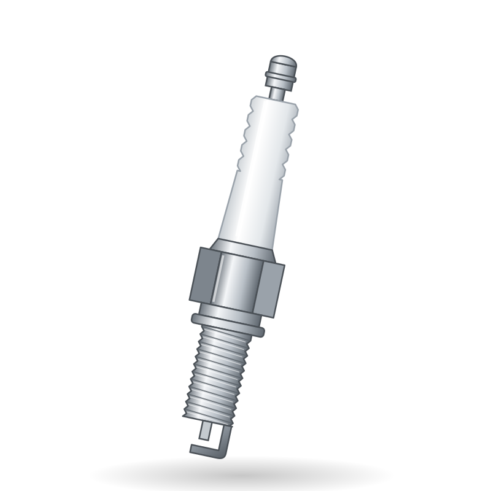
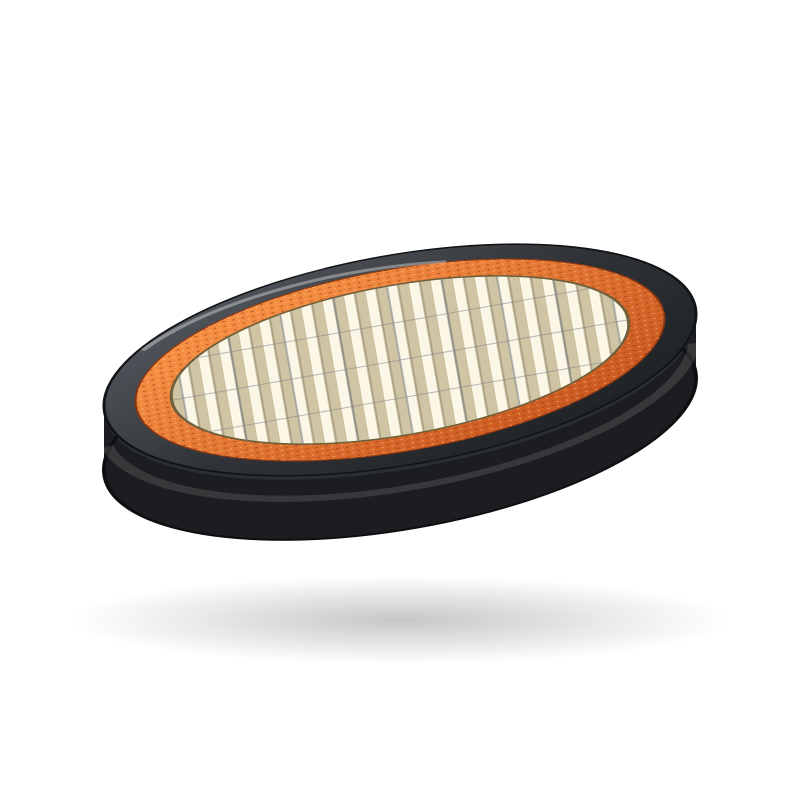

Spare parts / Yamaha / MT-07 / 12V battery
Yamaha MT-07 12V battery
12V battery for the Yamaha MT-07: when to replace it, what it costs, where to buy it and how to fit it.

IllustrationWorkshop photos




Where to buy
- Google ShoppingSearch results for this partgoogle.com ↗
- eBaySearch results for this partebay.com ↗
- AliExpressSearch results for this partaliexpress.com ↗
- AmazonSearch results for this partamazon.de ↗
- EbaySearch results for this partebay.de ↗
- FC-MotoAftermarket specialist: Large EU catalogue, 10k+ products, full datafeedfc-moto.de ↗
- LouisAftermarket chain: Wear-part catalogue with bike database (pads, chain kits, filters, plugs)louis-moto.com ↗
- CMSNLOEM parts (fiche): OEM exploded diagrams for Japanese brandscmsnl.com ↗
- WemotoAftermarket specialist: Commuter and scooter parts incl. Asian 125swemoto.com ↗
Check the part number for your model year before you buy. Genuine (OEM) parts first; good aftermarket parts are fine for wear items. Links open shop searches; Motopedia earns nothing from them today and will say so here if that changes.
Fit it yourself
Fitment
| Model | Yamaha MT-07 |
| Type | Naked |
| Engine | 690 cc |
| Final drive | Chain |
| Brakes | Disc |
| Main markets | EU/US |
Questions
How often should I replace the 12V battery on a Yamaha MT-07?
As a guide, 2-4 years. The owner's manual for your model wins, and riding on dusty roads, with a passenger or with heavy loads shortens it.
How much does a Yamaha MT-07 12V battery cost?
Typically US$ 15 to 150, depending on genuine or aftermarket and the shop. Prices are indicative.
Can I replace the 12V battery myself?
The job is rated 1 of 5 for difficulty. Follow the step-by-step guide and the values for your model.
More parts for the Yamaha MT-07

Illustration
Illustration
Illustration
Illustration
Illustration
IllustrationAll parts for the Yamaha MT-07 → 12V battery for other bikes →